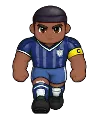

Wiki › Adversários › Thiago Sylva

Thiago Sylva
Nível 154 Paris
- Fôlego
- ❤️ 28.904
- Ataque
- ⚔️ 525
- XP
- ⭐ 23.480
- Tostões
- 🪙 765–1.147
- Chuta de longe
- não
- Vem te desafiar
- sim
O que deixa cair
| Item | QuantidadeQtd. | Chance | Raridade |
|---|---|---|---|
| 1–2 | 30% | Comum | |
| 1–3 | 30% | Comum | |
| 1 | 7,0% | Incomum | |
| 1 | 3,0% (1 em 33) | Épico | |
| 1 | 0,90% (1 em 111) | Lendário | |
| 1 | 0,02% (1 em 5.003) | Lendário |
Como ler: a % é a chance de cair em cada adversário vencido. Se você estiver muito acima do nível dele, a chance diminui (6 a 9 níveis acima: 80%; 10 a 14: 40%; 15 a 19: 15%; 20 ou mais: nada). Item pedido por uma missão que você aceitou cai com a chance cheia.
Onde aparece
🧭 Viagem: ✈️ Pegue o avião para Paris, França (a partir do nível 136) — no Brasil, o aeroporto fica na Cidade, com a Comissária Luana.
🧭 Caminho: de lá: Paris → Parque dos Príncipes
O que ele diz
Marca ele!
Aqui não!
Toca pra mim!